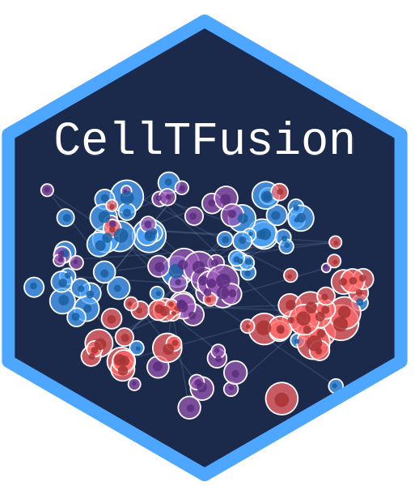

Construct cell groups based on TF networks and deconvolution
construct_cell_groups.RdIdentifies and projects cell groups using module relationships derived from TF networks and deconvolution outputs. If a binary trait is specified, the function splits the data and constructs cell groups for both classes (supervised analysis).
Usage
construct_cell_groups(
network,
dt,
batch = NULL,
pval = 0.05,
clustering.method = "ward.D2",
n_perm = 999,
dendrogram_file = NULL,
return_dendrogram = FALSE
)Arguments
- network
A list containing TF networks for cell types.
- dt
A list containing deconvolution subgroup structures.
- batch
Optional vector indicating batch assignment for samples.
- pval
Numeric. P-value threshold applied both to filter TF module-deconvolution feature correlations and as the significance cutoff for the CCA permutation test. Default: 0.05.
- clustering.method
Clustering method for hierarchical clustering. Default: "ward.D2".
- n_perm
Integer. Number of permutations for the CCA significance test per cell group. Higher values give more precise p-values but increase runtime. Default: 999.
- dendrogram_file
Optional character. File path to save dendrogram plot output.
- return_dendrogram
Logical. If TRUE, includes the dendrogram in the returned list. Default FALSE.
Value
A list of 3 elements:
- scores
A data frame or matrix with the projected cell group scores (samples x groups).
- composition
A named list where each element is a character vector of original cell types per group.
- loadings
A list of numeric vectors indicating the loadings (feature contributions) for each group.